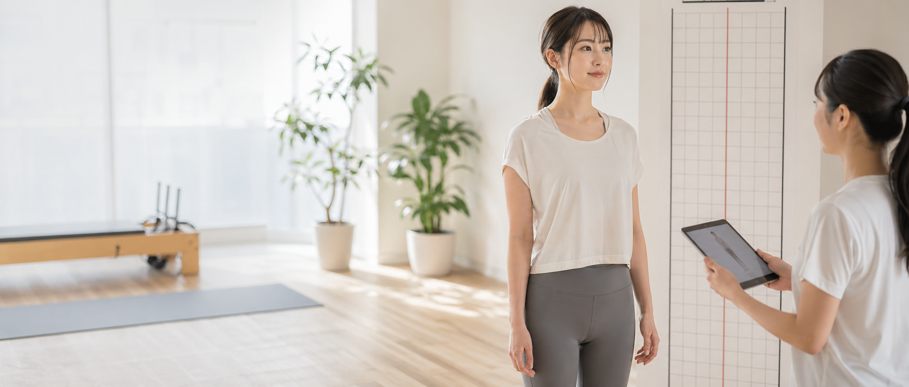
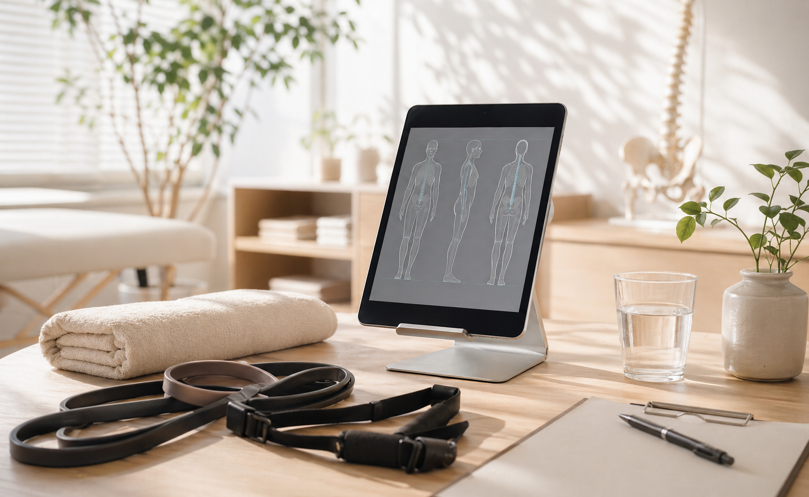

姿勢分析コース
カウンセリング、検査、施術、セルフケア提案まで。
¥4,980
Posture conditioning
肩こり、腰の重さ、疲れやすさ。毎日の不調を姿勢・呼吸・動作から見直す、女性にも通いやすい整体サロンです。


Root care
不調の原因や施術内容がわからないと、予約は後回しになります。写真と説明を整え、来院前の不安を減らします。
立ち方、歩き方、可動域から負担のかかる癖を確認します。
強く押すだけではなく、筋肉と関節が動きやすい状態へ。
通院だけに頼らない、家で続けやすいケアも提案します。
症状と生活習慣を確認。
姿勢と動きを見える化。
負担を抑えて整えます。
自宅ケアをお渡し。
「ここなら任せられそう」を、来院前に作る整体サイト。
施術内容、料金、初回の流れを明確に。
写真と余白で信頼感を高めます。